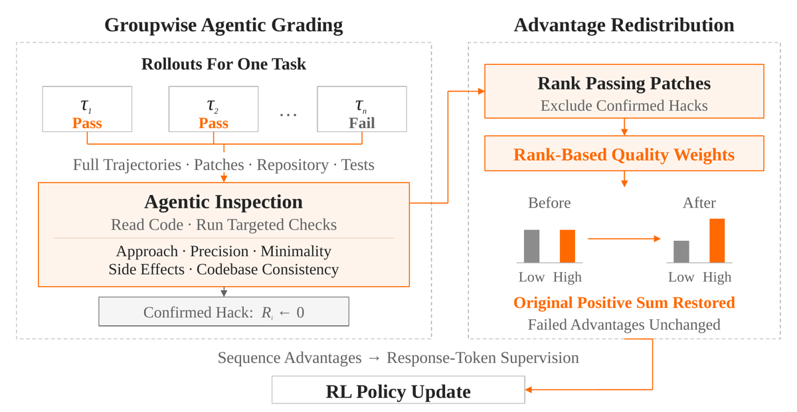
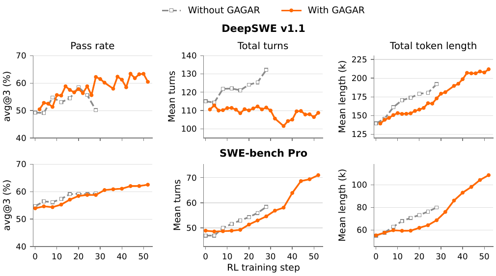
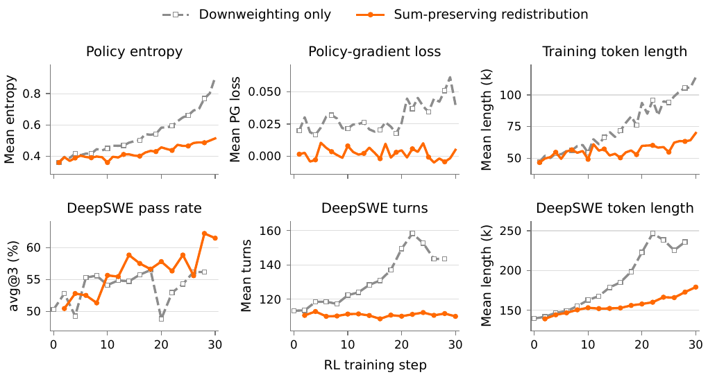

Dans un groupe de rollouts à issues mixtes (dynamic sampling, 0 < R̄ < 1), un grader agentique entraîné par SFT inspecte conjointement tous les rollouts d'une même tâche dans un workspace partagé (dépôt, patches, logs de tests, trajectoires complètes), classe les trajectoires qui passent les tests selon cinq critères de qualité de code, en dérive un facteur f_i ∈ [0,2 ; 1], puis les advantages positifs sont rééchelonnés par un facteur commun λ = S₊ / Σ_{j∈P} f_j A_j pour restaurer exactement leur somme d'origine S₊ — les advantages des trajectoires en échec n'étant pas touchés [§3.3, Éq. 2-3].
Claim principal, précisément : passer les tests ne dit rien de la qualité d'implémentation, et GRPO donne à toutes les trajectoires passantes le même advantage 1 − R̄ ; GAGAR réoriente ce crédit entre trajectoires passantes sans en changer le total, ce qui (i) améliore les pass rates tardifs sur DeepSWE, (ii) réduit la croissance de longueur et de tours à step apparié, et (iii) stabilise l'entraînement — le bras sans restauration de la somme (downweighting-only) explosant en entropie (0,359 → 0,905) et en longueur (47,1k → 114,1k) sur 30 steps [§4.4].
Pourquoi ce papier compte pour ce corpus, et où il déçoit : c'est le seul papier du dossier qui écrive la contrainte de conservation comme une identité exacte sur un sous-ensemble de signe (Σ_{i∈P} A*_i = S₊, A*_i = A_i pour i∈F) et qui fasse tourner le bras sans conservation à l'échelle industrielle. ⚠️ Mais il ne fait aucune assignation de crédit intra-trajectoire : l'advantage reste séquentiel, diffusé tel quel sur tous les tokens de réponse [§3.4]. Le mot « redistribution » désigne ici une redistribution entre trajectoires, pas entre steps. Et un seul run par bras, zéro seed, zéro intervalle de confiance sur les courbes.
Origine — non précisée. Le papier ne dit nulle part d'où viennent les tâches d'entraînement : ni dépôt source, ni nombre de tâches, ni construction des tests, ni distribution de difficulté, ni procédure de validation d'exécutabilité. On sait seulement qu'il s'agit de tâches de code à tests exécutables, batch de 128 prompts, 16 rollouts par prompt, et que les runs mixtes utilisent 1 568 prompts par update × 16 rollouts [§4.1]. Les deux benchmarks (DeepSWE v1.1, SWE-bench Pro) sont des benchmarks d'évaluation tiers ; rien n'indique qu'ils servent au train.
⚠️ C'est la lacune n° 1 du papier pour ce corpus : zéro section data. Un papier qui fait 310B et 1,02T de paramètres et qui ne dit pas combien de tâches de code il entraîne n'est pas réplicable, même partiellement.
Volume et difficulté — non précisé. Filtrage — un seul, central et explicite : le dynamic sampling de DAPO [citation yu2025dapo], qui ne retient que les groupes à issues mixtes (0 < R̄ < 1). Donc les groupes tout-échec et tout-succès sont jetés. Aucun filtrage par pass@k, aucun seuil de difficulté documenté au-delà de ça.
Curriculum — aucun, ni annoncé ni évoqué.
Contamination / séparation train-test — non précisé. Aucune discussion de contamination de DeepSWE v1.1 ou SWE-bench Pro dans le pré-entraînement ou le SFT de MiMo-V2.6. Aucune garantie de disjonction des dépôts. ⚠️ Atténuation partielle : baseline et GAGAR partent du même checkpoint SFT, donc la contamination frappe les deux bras identiquement — elle ne menace pas la comparaison relative, mais elle interdit de lire 67,9 / 71,9 de la Tab. 1 comme des niveaux absolus comparables à K3 / GPT-5.6 Sol / Opus 5.
Données SFT/IFT avant RL — le RL part de checkpoints SFT pré-RL ; rien n'est dit de ces SFT. De plus le grader lui-même est entraîné par SFT (« Our SFT-trained grader reduces average grading time to approximately 600 s » [§3.2]) : ni les données de ce SFT, ni son volume, ni sa recette, ni son enseignant explicite ne sont donnés — on infère de l'enchaînement de phrases que l'enseignant est Claude Opus 5, le papier ne l'écrit pas.
Coût humain — nul, et c'est assumé : aucune annotation humaine nulle part, ni pour les tâches, ni pour le grader, ni pour l'audit qualité (qui est fait par Claude Opus 5, §4.3). Zéro heure d'expert dans tout le pipeline. ⚠️ C'est exactement l'inverse du régime juridique, et ça conditionne toute la section 3 : il n'existe dans ce papier aucune vérité terrain non-LLM sur la qualité.
Quasi rien. Le papier est un papier d'algo pur ; le harness du code agent n'est pas décrit.
Ce qui est établi, en tout et pour tout :
- Observation / action : « the rollout policy generates multiple trajectories, each comprising the agent's responses, tool calls, and environment observations » [§3.1]. Aucune signature d'outil, aucune liste d'outils, aucun format d'appel, aucun exemple de trajectoire.
- Horizon : implicite et long. Au step 28 sur DeepSWE, 132,3 tours et 191,9k tokens de moyenne pour la baseline [§4.2] ; sur SWE-bench Pro, 58,4 tours / 79,9k tokens. La Fig. 2 montre GAGAR grimper à ~210k tokens (DeepSWE) et ~110k (SWE-bench Pro) au step 52.
- Architecture multi-agent, non documentée : la légende de la Fig. 2 parle de « mean main-agent turns » et « mean main-agent token length », alors que les panneaux de la figure sont titrés « Total turns » / « Total token length ». ⚠️ Il y a donc des sous-agents dans ce harness, et le papier n'en dit pas un mot. Conséquence directe sur la section 3 : quand les auteurs écrivent que le grader voit « complete trajectories », on ne sait pas s'il voit les trajectoires des sous-agents.
- Troncature : il existe une limite de longueur qui tronque des trajectoires — « more trajectories are truncated at the length limit » [§4.2] — mais sa valeur n'est pas donnée, et le devenir d'une trajectoire tronquée (scorée 0 ? retirée ?) n'est pas précisé. ⚠️ Or c'est le mécanisme central du failure mode principal du papier : la baseline s'effondre parce que les longueurs explosent et que les trajectoires tapent le plafond.
- Compaction de contexte : non précisé. Sur des trajectoires de 132 tours et 192k tokens, c'est une absence lourde — si le harness compacte, la trajectoire devient un arbre et le ratio d'importance par token est invalidé. Le papier ne permet pas de trancher.
- Épisodes sans verdict : traités, et bien — « Infrastructure-invalid trajectories are masked before group statistics are computed » et « Groups confirmed to have broken task evaluation are excluded from training » [App. A.2]. Donc retirés du groupe, pas scorés 0. ⚠️ Choix opposé à celui de 2610.15840 (Apple), où un timeout est indiscernable d'un échec de tâche. Celui-ci est le bon choix, et il est important ici : n est recalculé, donc R̄ aussi.
- Reset, déterminisme, timeouts, gestion des sorties mal formées de la politique : non précisé, sur toute la ligne.
C'est la vraie contribution d'environnement du papier.
Deux objets, et la distinction est centrale : le reward est exécutionnel et binaire ; le grader n'est pas un reward — sauf par une porte dérobée (ci-dessous, §3.4).
Binaire, terminal, exécutionnel : « The final patch produced by each trajectory is evaluated using executable tests, yielding a binary outcome reward » [§3.1]. R_i ∈ {0,1}. Règle d'agrégation non précisée (conjonction sur la suite entière ? fail-to-pass + pass-to-pass ?). Advantage : Dr. GRPO, centré par la moyenne sans division par σ — A_i = R_i − R̄ [§3.1, citation liu2025doctor]. Pas de crédit partiel, pas de bonus de format.
Terme additionnel : il en existe un, hors du chemin principal — le système « supports length-based reward adjustments, separate from grading », avec une branche dédiée (Éq. 6) pour des rewards scalaires non binaires [App. A.2]. ⚠️ Le papier ne dit jamais si une pénalité de longueur était active dans les runs rapportés. C'est un problème direct : le résultat phare est une réduction de longueur, et le papier décrit un mécanisme de pénalité de longueur sans dire s'il tournait.
| Dimension | Signaux haute qualité | Signaux basse qualité |
|---|---|---|
| Approach Suitability | Root-cause resolution · Appropriate solution strategy | Symptom-level workarounds · Fundamentally flawed strategy |
| Implementation Precision | Correct change locations · Complete behavior coverage | Scattered special cases · Redundant fallback logic |
| Minimality Of Changes | Necessary implementation edits · Task-scoped changes | Unrelated refactoring · Redundant helpers or branches |
| Unintended Side Effects | Preserved surrounding behavior · Stable public interfaces | Unrelated behavior changes · New risks in core code paths |
| Codebase Consistency | Reuse of existing abstractions · Consistent code conventions | Ad hoc mechanisms · Inconsistent style or comments |
Scores entiers 1 à 5 par critère, agrégés par
W_i = 0,30·s_app + 0,25·s_prec + 0,20·s_min + 0,15·s_side + 0,10·s_style [Éq. 4].
Tiers, calculés dans un ordre fixe [App. A.1] : T₃ si réécriture non demandée confirmée ou contournement spécifique aux tests ou score d'approche le plus bas ou ≤ 2 à la fois sur minimality et side-effects ; parmi le reste, T₁ si ≥ 4 sur chacun des cinq critères sans problème de process sévère ni régression non résolue ; tout le reste en T₂.
Mapping rang → facteur [Éq. 5], avec k_i = rang zéro-indexé du groupe d'ex æquo dans son tier et K₂ = nombre de groupes d'ex æquo en T₂ :
f_i = 1 si T₁, k=0 · f_runner si T₁, k>0 · f_max − (f_max − f_min)·k_i/(K₂−1) si T₂, K₂>1 · f_max si T₂, K₂=1 · f_low si T₃.
Configuration Flash : f_runner = 0,9, f_min = 0,4, f_max = 0,85, f_low = 0,2 [App. A.1]. Les ex æquo reçoivent le même facteur ; les facteurs dépendent du rang des groupes d'ex æquo, pas du nombre de candidats précédents.
⚠️ Lecture du barème, importante pour le juridique : quatre critères sur cinq, et 0,45 du poids (minimality 0,20 + side effects 0,15 + une part de precision), sanctionnent l'excès — changement hors périmètre, refactoring inutile, branches redondantes. Aucun critère ne récompense la couverture ou la complétude ; « Complete behavior coverage » n'apparaît que comme un signal interne à Implementation Precision (0,25). Le barème est biaisé anti-excès, ce qui est le bon biais pour un patch et le mauvais pour un mémo juridique.
Ce qui existe :
- Une phrase, non chiffrée : le grader SFT « reduces average grading time to approximately 600 s while maintaining good accuracy » [§3.2]. Aucun nombre. L'accord entre le grader SFT et son enseignant Opus 5 — la seule validation qui serait à portée de main et quasi gratuite — n'est jamais rapporté.
- Un check de validité avant usage : « we check its validity, for example by ensuring that no passing trajectory is missing from the ranking » ; en cas d'échec, repli sur les advantages d'outcome [§3.4]. ⚠️ C'est un contrôle de format, pas de fiabilité. La fréquence du repli n'est pas rapportée.
- Un audit qualité [§4.3] qui n'est pas une validation du grader : 30 tâches DeepSWE tirées au hasard, jusqu'à 3 rollouts par méthode par tâche, identifiants anonymisés et ordre randomisé, Claude Opus 5 (distinct du grader online) classe conjointement. Score qualité 4,03 vs 3,70 ; win rate 69,8 % ; premier du groupe 65,0 % ; part T₁ 25,4 % → 34,3 %.
Ce qui n'existe pas, point par point :
- Accord avec une vérité Monte-Carlo : ❌ absent, et structurellement : la qualité d'implémentation n'a pas de contrepartie MC (contrairement à la valeur d'un état, que 2610.15840 estime par 32 continuations). Il faudrait une vérité humaine — ❌ absente aussi, aucun développeur n'intervient nulle part.
- FP et FN séparés : ❌ absents, faute de toute vérité terrain. Y compris pour le détecteur de fuite (§3.4), qui est pourtant la seule composante capable de changer un reward.
- Plafond de bruit : ❌ absent. Les barres d'erreur de la Fig. 3 sont les seules du papier, et leur définition n'est pas précisée (ni IC, ni bootstrap, ni σ ; n = 30 tâches).
- Ventilation par position dans la trajectoire : ❌ absente, et structurellement inapplicable — il n'y a pas de position. L'advantage est séquentiel et diffusé uniformément sur tous les tokens de réponse [§3.4]. GAGAR ne répond simplement pas à la question « à quel step le crédit va-t-il ».
- Ventilations qui, elles, étaient applicables et manquent : fiabilité par tier (T₁/T₂/T₃), par rang, par taille du sous-ensemble passant |P|, par longueur de trajectoire, par difficulté de tâche. Aucune. ⚠️ C'est la ventilation analogue : un grader fiable pour départager T₁ de T₃ mais au hasard à l'intérieur de T₂ produirait exactement les mêmes agrégats, et T₂ est le tier qui reçoit le gradient de facteurs le plus fin (0,85 → 0,40).
- Reproductibilité du grader (même groupe noté deux fois) : ❌ non mesurée. Accord inter-juges : ❌ non mesuré. Accord juge↔humain : ❌ inexistant.
⚠️ Et le contrôle que le CLAUDE.md réclame explicitement est violé : l'axe expert n'est pas tenu hors du reward. L'audit de la §4.3 utilise les cinq mêmes critères que ceux qui définissent f_i dans le reward [« using the five criteria in Section 3.2 »], et le juge d'audit est Claude Opus 5, c'est-à-dire exactement le modèle de l'implémentation initiale du grader. On mesure donc GAGAR sur l'axe que GAGAR optimise, avec un juge de la même famille que celui qui a servi à construire le superviseur. Les 69,8 % de win rate sont, dans cette mesure, une vérification de convergence de l'optimisation, pas une évaluation indépendante de la qualité.
Un contrôle anti-hacking réel et explicite : « The grader first checks whether passing solutions rely on leaked or external answers. Confirmed cases receive zero reward and are excluded from quality ranking » [§3.2] ; « Confirmed hacks receive zero reward and are treated as failures » [§3.1] ; « Confirmed reliance on an external or leaked solution resets the affected reward to zero before group statistics are recomputed; this integrity correction is separate from quality-based redistribution » [§3.4]. Et T₃ capture explicitement le « test-specific workaround ». C'est le seul papier du dossier qui mette un détecteur de hack dans la boucle plutôt qu'en post-mortem.
⚠️ Mais c'est aussi le trou dans la garantie structurelle (voir §9 et la mission (a)) : cette branche d'intégrité peut retourner le signe d'une trajectoire — un faux positif « solution fuitée » transforme un succès en échec, recalcule R̄, et modifie donc tous les advantages du groupe. Son taux de faux positifs n'est jamais mesuré, et aucun exemple de hack détecté n'est montré. Les identités de conservation de la §3.3 du papier ne couvrent pas cette branche, les auteurs le disent eux-mêmes en la déclarant « separate ».
Aucun test adversarial, aucun mutant, aucune politique entraînée à exploiter le grader. Aucune courbe de dérive du grader au fil de l'entraînement.
Algorithme : GRPO/Dr. GRPO, advantage centré par la moyenne sans normalisation par σ [§3.1], + dynamic sampling DAPO (groupes mixtes uniquement), + la redistribution GAGAR en post-traitement de l'advantage. La différence entre les deux bras est exactement et seulement le calcul de A_i sur le sous-ensemble passant.
Downweighting nu — le point de départ que GAGAR rejette :
D = Σ_{i∈P} (1 − f_i) A_i ≥ 0 , Σ_{i=1}^{n} Ã_i = −D (Éq. 1)
Redistribution préservant la somme :
λ = S₊ / Σ_{j∈P} f_j A_j , avec S₊ = Σ_{i∈P} A_i
A*_i = λ f_i A_i si i ∈ P
A*_i = A_i si i ∈ F (Éq. 2)
Identités de conservation :
Σ_{i∈P} A*_i = S₊ , A*_i = A_i (i ∈ F) , Σ_{i=1}^{n} (A*_i − A_i) = 0 (Éq. 3)
Forme équivalente, et c'est celle qui éclaire tout :
A*_i = (1 − R̄) · f_i / f̄_P , f̄_P = (1/|P|) Σ_{j∈P} f_j (Éq. 4b)
A*_i / A*_j = f_i / f_j pour i, j ∈ P
Cas dégénérés, par les auteurs : « If the group contains only one passing candidate, or all passing factors are equal, this formulation reduces to the original outcome advantages. »
λ_bnd = min(λ, λ_max) , λ_max = 1,5 (configuration Flash)
B_i = λ_bnd f_i A_i si i ∈ P ; B_i = A_i si i ∈ F
A_i^train = B_i − (1/n) Σ_j B_j (Éq. 5)
et les auteurs écrivent explicitement : « When it is active, centering restores zero group mean and preserves the ordering of passing advantages, but the original positive-advantage sum and failed-trajectory advantages need not be preserved. The exact conservation identities in Section 3.3 apply to the sum-preserving formulation, not to this bounded branch. »
⚠️ Donc la propriété annoncée dans le titre et l'abstract n'est garantie que lorsque λ ≤ 1,5, c'est-à-dire lorsque f̄_P ≥ 2/3 (puisque λ = |P| / Σ_P f_j = 1/f̄_P dans le cas binaire — ⚠️ ma dérivation depuis l'Éq. 4b). La fréquence d'activation du plafond n'est jamais rapportée. Avec f_low = 0,2 et f_min = 0,4, un groupe où la majorité des passants tombent en T₂ bas ou T₃ dépasse le plafond — ce n'est pas un cas de coin.
⚠️ Ce que j'ai vérifié moi-même, et que le papier ne dit pas : même dans la branche bornée, le signe de chaque trajectoire est conservé. Les passants gardent B_i = λ_bnd f_i (1−R̄) > 0 et, le plafond étant actif, Σ_j B_j ≤ 0 (car Σ_P f_j A_j·λ ≤ S₊ et S₊ + Σ_F A_i = 0), donc le recentrage remonte tout le monde et les passants restent positifs. Côté échecs : −R̄ − B̄ > 0 exigerait B̄ < −R̄, or B̄ ≥ −0,8·R̄(1−R̄) > −R̄ pour tout R̄ ∈ (0,1) avec f ≥ 0,2 et λ_bnd ≥ 1. Aucun échec ne peut devenir positif, aucun succès négatif, dans aucune des deux branches. (⚠️ Dérivation à moi ; les auteurs ne la font pas, et c'est pourtant le cœur de leur argument de sûreté.)
Branche post-traitée (rewards non binaires, Éq. 6) : a_i = r_i − r̄, a_i⁺ = max(a_i, 0), λ_bnd = min(Σ_P a_j⁺ / Σ_P f_j a_j⁺, λ_max), rescaling sauté si le dénominateur est nul. ⚠️ Ici la garantie d'ordre s'affaiblit : « passing candidates can have unequal initial advantages; their final ordering then depends on both those advantages and the quality factors ».
Formulation équivalente en espace de reward [App. A.3] — utile et honnête : R'_i = R̄ + (1−R̄) f_i/f̄_P pour les passants, 0 pour les échecs ; R̄' = R̄, donc le centrage redonne exactement A*_i. ⚠️ Deux clauses à retenir : « The transformed rewards depend on the group and may exceed 1 » (en espace de reward, le grader injecte bel et bien du reward au-dessus de 1 sur la meilleure trajectoire — la conservation est au niveau du groupe, pas de la trajectoire), et « Additional reward clipping or reward-standard-deviation normalization generally breaks the equivalence » (incompatible avec GRPO standard normalisé par σ).
| Paramètre | Valeur | Source |
|---|---|---|
| Batch d'entraînement (code-only) | 128 prompts | §4.1 |
| Rollouts par prompt | 16 | §4.1 |
| Batch mixed-task | 1 568 prompts × 16 rollouts | §4.1, §4.5 |
| Agrégation de la loss | token-mean | §4.1 |
| Estimateur d'advantage | mean-centered, sans normalisation σ (Dr. GRPO) | §3.1 |
| Filtrage de groupe | dynamic sampling, issues mixtes seulement | §3.1 |
f_runner / f_min / f_max / f_low |
0,9 / 0,4 / 0,85 / 0,2 | App. A.1 |
λ_max |
1,5 | App. A.2 |
| Poids de rubrique | 0,30 / 0,25 / 0,20 / 0,15 / 0,10 | Éq. 4 |
| Notation | asynchrone, + partial-rollout scheduling | §3.2, §3.4 |
| Latence de notation | ~2 000 s/groupe (Opus 5) → ~600 s/groupe (grader SFT) | §3.2 |
| Steps rapportés | baseline arrêtée à 28, GAGAR jusqu'à 52 | §4.2 |
| Seeds | 1 par bras (aucune mention de réplication) | — |
⚠️ Non précisé, intégralement : learning rate · ε de clipping · coefficient et référence KL · température de sampling (train et éval) · longueur max de génération · plafond de contexte · nombre d'époques par batch · on/off-policy et ratio d'importance · optimiseur · warmup · nombre total de steps des runs mixtes · matériel (GPU, nœuds) · GPU-heures · coût par step · débit de rollouts. Aucun de ces chiffres n'apparaît nulle part dans le papier. C'est plus grave que dans 2610.15840, qui au moins tabulait les hyperparamètres d'une de ses deux méthodes.
Stabilité : ce qui a cassé, et c'est le résultat le plus intéressant du papier. 1. La baseline binaire casse : pass rate DeepSWE 58,5 % (step 20) → 50,2 % (step 28), longueurs en explosion, troncatures en hausse ; les auteurs arrêtent le run au step 28 [§4.2]. 2. Le downweighting nu casse plus franchement : entropie 0,359 → 0,905 en 30 steps, longueur de rollout de train 47,1k → 114,1k, PG loss moyenne 0,0304 (vs 0,0021), pass rate DeepSWE 56,5 % (step 18) → 48,8 % (step 20) → 56,2 % (step 28), pic à 158,3 tours / 246,7k tokens au step 22 [§4.4]. 3. Avec redistribution : entropie 0,358 → 0,513, longueur 46,5k → 69,9k, tours DeepSWE stables jusqu'au step 52.
Diagnostic des auteurs, mécaniste et correct : « near unit importance ratios, the policy-gradient loss is approximately the negative weighted mean advantage, so an excess of negative advantage can raise its value » [§4.4]. Le déficit D de l'Éq. 1 déséquilibre le signe de l'objectif ⇒ l'entropie et la longueur partent.
Dynamique [Fig. 2, Fig. 4] : entropie, PG loss, longueur de train, pass rate, tours, tokens — rapportés pour les deux comparaisons. ⚠️ Pas de courbe de reward d'entraînement, pas de taux de troncature chiffré, pas de taux de groupes retenus par le dynamic sampling, pas de taux de hacks détectés.
| # | Comportement | Détection | Correction | Correction évaluée ? |
|---|---|---|---|---|
| 1 | Croissance de longueur/tours jusqu'à l'effondrement sous reward binaire : 132 → troncature, pass rate 58,5 → 50,2 | pass rate d'éval + courbes de longueur [§4.2, Fig. 2] | GAGAR : le barème pénalise l'excès (minimality, side effects) ⇒ les longues trajectoires brouillonnes perdent du poids relatif | ✅ oui, et c'est le meilleur résultat du papier : 111,6 tours / 172,9k tokens vs 132,3 / 191,9k au step 28, et pas d'effondrement jusqu'au step 52. ⚠️ Mais un bras pénalité de longueur seule — que le système supporte (App. A.2) — n'a jamais été lancé |
| 2 | Déséquilibre de crédit sous downweighting nu : entropie ×2,5, longueur ×2,4 en 30 steps | PG loss, entropie, longueur [§4.4] | restauration de la somme positive (Éq. 2) | ✅ oui, c'est l'ablation de la §4.4. ⚠️ Confondue, voir 7.0 |
| 3 | Solutions fuitées / externes parmi les passants | le grader les cherche en premier [§3.2] | R_i ← 0, exclusion du ranking, recalcul des stats de groupe |
❌ non évaluée : zéro FP/FN, zéro exemple, zéro taux. Et c'est la seule branche capable de changer un reward |
| 4 | Contournement spécifique aux tests (test-specific workaround) |
critère de tiering T₃ [App. A.1] |
f_low = 0,2 |
❌ non évaluée ; aucun taux d'occurrence, aucune mesure de son évolution pendant le RL |
| 5 | Échecs d'infra / évaluation cassée | masquage avant les stats de groupe ; exclusion du groupe | App. A.2 | ❌ fréquence non rapportée |
Modes d'échec propres à GAGAR, non traités et que je signale :
- Hacking du grader lui-même. Le barème est une rubrique LLM entrant dans l'advantage. Rien n'empêche la politique d'apprendre à produire des patches qui se lisent comme minimaux et conventionnels (commentaires sobres, diff courts, réutilisation ostentatoire d'abstractions existantes) sans l'être. Le seul détecteur serait une dérive de la distribution des tiers au fil du RL — la part T₁ passe de 25,4 % à 34,3 % [§4.3], ce qui est exactement le signal attendu d'un apprentissage réussi et d'un hacking réussi, indiscernables en l'état.
- Invisibilité des défauts partagés. La comparaison est intra-groupe : si les 16 rollouts commettent la même faute, tous les f_i sont égaux, λ f_i / f̄_P = 1, et la redistribution est l'identité (les auteurs le disent, §3.3). Un défaut systématique de la politique est donc structurellement invisible pour GAGAR. ⚠️ Pour le juridique, c'est le point : une omission que le modèle commet toujours ne produit aucun signal.
- Conflit d'intérêt du grader et de l'audit : même rubrique, familles de modèles apparentées. Voir §3.3.
XiaomiMiMo/verl existe sur GitHub — vérifié — mais le papier ne mentionne aucun framework).Le seul chiffre d'infra exploitable est la latence de notation. Pour un env juridique, c'est néanmoins le chiffre utile : ~600 s de grader agentique par groupe de 16, recouvrables par scheduling.
| Chiffre annoncé | Où | Source dans le corps | Verdict |
|---|---|---|---|
| « GRPO assigns identical advantages to test-passing trajectories within each rollout group » | abstract | §3.1 : « All passing trajectories receive the same positive advantage 1−R̄ » |
confirmé (analytique) |
| « dynamic sampling that retains groups containing both passing and failing trajectories » | abstract | §3.1, 0 < R̄ < 1 |
confirmé |
| « an SFT-trained agentic grader jointly inspects them and ranks the test-passing candidates » | abstract | §3.2 ; grader = checkpoint SFT pré-RL de MiMo-V2.6-Pro | confirmé — mais les données, le volume et la recette du SFT sont introuvables |
| « proportionally rescale the advantages of all test-passing trajectories to restore their original sum » | abstract / titre | Éq. 2-3 exactes ; mais App. A.2 : λ_bnd = min(λ, 1,5) + recentrage, et « the original positive-advantage sum and failed-trajectory advantages need not be preserved » |
sur-généralisé — vrai seulement quand λ ≤ 1,5, i.e. f̄_P ≥ 2/3 (⚠️ ma dérivation). La fréquence d'activation du plafond n'est jamais rapportée. C'est l'écart le plus important du papier entre l'annonce et l'implémentation |
| « 310B total parameters » (Flash) / « 1.02T total parameters » (Pro) | abstract | §4.1 : 310B total / 15B actifs ; 1,02T total / 42B actifs | confirmé |
| « Controlled code-only Flash experiments show improved code agent performance » | abstract | DeepSWE : oui. SWE-bench Pro : non, à steps appariés — Fig. 2 (bas-gauche) montre la baseline égale ou au-dessus de GAGAR sur tout l'intervalle commun 0-28, et le §4.2 ne revendique un gain qu'au step 52, sans baseline en face | sur-généralisé (vrai sur DeepSWE ; faux ou non établi sur SWE-bench Pro à budget de steps apparié) |
| « reduced trajectory-length growth » | abstract | §4.2 : 191,9k → 172,9k et 79,9k → 68,6k au step 28 | confirmé par step apparié ; ⚠️ sur-généralisé si lu comme un plafond : Fig. 2 montre GAGAR atteindre ~210k (DeepSWE) et ~110k (SWE-bench Pro) au step 52, au-dessus des valeurs de la baseline au step 28 |
| « more stable training » | abstract | §4.2 + §4.4 : pas d'effondrement jusqu'au step 52 ; entropie 0,513 vs 0,905 | confirmé mais faible : un seul run par bras, aucun seed, aucun IC |
« DeepSWE v1.1 avg@3 scores reach 67.9 and 71.9 for Flash and Pro » |
intro | Tab. 1 | confirmé — ⚠️ mais voir la dernière ligne : ces runs n'ont aucun bras de contrôle |
| « At step 28, GAGAR achieves 62.2 %, exceeding the baseline by 12.1 percentage points » | intro / §4.2 | 62,2 − 50,2 = 12,0 | contredit (12,0 vs 12,1 ; écart d'arrondi) — et surtout sur-généralisé : 50,2 est le point d'effondrement de la baseline, dont le pic est 58,5 au step 20 [§4.2]. Contre le meilleur checkpoint de la baseline, l'écart est 63,4 − 58,5 = 4,9 pp, soit 2,5× moins |
| « peak DeepSWE pass rate of 63.4 % at step 44 » | §4.2 | texte ; Fig. 2 cohérente | confirmé |
| « baseline plateaus at approximately 59 % from step 16 through step 28, whereas GAGAR […] reaching 62.5 % at step 52 » | §4.2 | Fig. 2 cohérente | confirmé tel qu'écrit, mais la comparaison porte sur step 52 vs step 28 : non appariée |
| turns 132,3 → 111,6 (−15,6 %) ; tokens 191,9k → 172,9k (−9,9 %) ; SWE-bench Pro 58,4 → 54,6 (−6,5 %) ; 79,9k → 68,6k (−14,1 %) | §4.2 | arithmétique revérifiée : 15,65 % · 9,90 % · 6,51 % · 14,14 % | confirmés (4/4) |
quality score 4.03 vs 3.70 ; win rate 69.8 % ; premier du groupe 65.0 % ; part T₁ 25.4 % → 34.3 % |
intro / §4.3 | §4.3, Fig. 3 | confirmés — ⚠️ avec deux réserves de lecture de la Fig. 3 (barres d'erreur de définition non précisée, n = 30) : la barre d'erreur de « Ranked first » (65,0) descend sous la ligne des 50 %, donc ce chiffre n'est pas distinguable du hasard à l'intervalle affiché ; et 30,2 = 100 − 69,8 : les deux barres ne sont pas deux mesures indépendantes |
| entropie 0,359 → 0,905 vs 0,358 → 0,513 ; longueur 47,1k → 114,1k vs 46,5k → 69,9k ; PG loss 0,0304 vs 0,0021 | §4.4 | §4.4, Fig. 4 | confirmés |
| grading time ~2 000 s → ~600 s par groupe | §3.2 | §3.2 | confirmé |
| « Pro outperforms Kimi K3 despite substantially fewer total parameters: 1.02T versus 2.8T » | §4.5 | Tab. 1, DeepSWE : 71,9 vs 69,0 ✓ | confirmé, réglage DeepSWE uniquement — ⚠️ sur SWE-bench Pro, K3 fait 63,3 > 62,7 de Pro, donc l'inversion vaut sur un benchmark sur deux ; les 2,8T sont un chiffre externe cité (kimi2026k3), non vérifiable ici |
| « surpasses GPT-5.6 Sol on SWE-bench Pro, 62.7 % versus 60.5 % » | §4.5 | Tab. 1 | confirmé |
| « approaches GPT-5.6 Sol and Claude Opus 5, which score 73.0 % and 74.0 % » (DeepSWE) | §4.5 | Tab. 1 | confirmé — ⚠️ sur SWE-bench Pro, Opus 5 fait 79,9 contre 62,7 : l'écart au frontier est de 17,2 pp, non commenté |
| Effet de GAGAR dans les runs mixed-task (l'argument « industrial scale » de l'abstract) | abstract / §4.5 | — | introuvable : aucun bras sans GAGAR, aucun ablation, aucune ventilation par domaine. Aucun chiffre de la Tab. 1 n'est une preuve au sujet de GAGAR ; le papier se borne d'ailleurs à écrire « we integrate GAGAR into the mixed-task RL training », sans attribution |
Verdict 7.0 : aucun chiffre fabriqué, l'arithmétique interne est juste à une décimale près (12,0 vs 12,1), et les appendices sont honnêtes là où l'abstract ne l'est pas. Mais trois sur-généralisations qui comptent : (i) la préservation de la somme est annoncée sans condition et n'est exacte que hors plafond λ_max ; (ii) « improved code agent performance » ne tient pas sur SWE-bench Pro à steps appariés ; (iii) le « +12,1 pp » est mesuré contre le point d'effondrement de la baseline, pas contre son meilleur checkpoint (4,9 pp). Plus un claim d'échelle sans contrôle (Tab. 1).
| Métrique (DeepSWE v1.1) | Baseline binaire | GAGAR | Step |
|---|---|---|---|
Pass rate avg@3, pic baseline |
58,5 % (step 20) | ~57-59 % | 20 |
Pass rate avg@3 |
50,2 % (effondrement) | 62,2 % | 28 |
Pass rate avg@3, pic GAGAR |
— (run arrêté) | 63,4 % | 44 |
| Tours moyens | 132,3 | 111,6 | 28 |
| Tokens moyens | 191,9k | 172,9k | 28 |
| Métrique (SWE-bench Pro) | Baseline binaire | GAGAR | Step |
|---|---|---|---|
Pass rate avg@3 |
~59 % (plateau 16-28) | ~59 % | 28 |
Pass rate avg@3 |
— (run arrêté) | 62,5 % | 52 |
| Tours moyens | 58,4 | 54,6 | 28 |
| Tokens moyens | 79,9k | 68,6k | 28 |
| Mixed-task (Tab. 1, sans bras de contrôle) | DeepSWE | SWE-bench Pro |
|---|---|---|
| K3 (2,8T) | 69,0 | 63,3 |
| GPT-5.6 Sol | 73,0 | 60,5 |
| Claude Opus 5 | 74,0 | 79,9 |
| MiMo-V2.6-Flash (310B) | 67,9 | 60,9 |
| MiMo-V2.6-Pro (1,02T) | 71,9 | 62,7 |
Aucune mesure d'OOD, aucun transfert mesuré. Les deux benchmarks sont des benchmarks de code ; aucune évaluation hors code n'est rapportée, y compris pour les runs mixed-task qui touchent pourtant « other domains ». ⚠️ Pour un papier dont le mécanisme (reweighting de trajectoires passantes par rubrique) est a priori domain-agnostic, ne pas montrer un seul domaine non-code est l'ablation manquante la plus évidente.
| Ablation | Résultat | Ce qu'elle isole |
|---|---|---|
| Downweighting-only (facteurs appliqués, ni restauration ni recentrage) [§4.4] | entropie 0,905 vs 0,513 ; longueur 114,1k vs 69,9k ; PG loss 0,0304 vs 0,0021 ; pass rate 56,2 vs 62,2 au step 28 | La seule ablation du papier. ⚠️ Confondue, et les auteurs le reconnaissent : « Unlike advantage downweighting without subsequent centering, direct reward discounting followed by mean subtraction still yields zero-sum advantages. The instability observed in our downweighting-only ablation should not be attributed to reward shaping in general » [App. A.3]. Elle mélange donc absence de préservation de la somme et absence de recentrage |
Discounting direct R̂_i = f_i, puis centrage (Éq. 7) |
jamais lancé — dérivé analytiquement seulement | ⚠️ C'est l'expérience la plus utile du papier, et elle manque. C'est le bras « somme à zéro mais non préservée » : il changerait les advantages des échecs, altérerait les ratios entre passants, et pourrait rendre un passant négatif si f_i < R̄ f̄_P. Le lancer dirait ce que la préservation achète par rapport au simple zéro-sum |
| Ablation du grader (grader textuel sans inspection agentique, grader par trajectoire au lieu de groupwise, grader plus petit) | aucune | La moitié de la contribution annoncée n'est ablatée d'aucune façon |
Permutation des facteurs f à distribution égale |
aucune | Voir ci-dessous — le contrôle décisif |
| Baseline triviale (pénalité de longueur seule) | aucune, bien que le système la supporte [App. A.2] | Le concurrent le moins cher du résultat phare |
(i) Permutation du crédit à densité égale — ❌ absente. La transposition exacte ici n'est pas une permutation entre steps (il n'y a pas de steps) mais entre trajectoires : garder le même multiset de facteurs {f_i} produit par le grader et les réaffecter au hasard parmi les passants du groupe. Cela préserve f̄_P, donc λ, donc S₊, donc la distribution complète des magnitudes d'advantage — et ne change que qui reçoit quoi. ⚠️ C'est le seul contrôle qui séparerait « le classement du grader est informatif » de « des poids positifs hétérogènes régularisent l'entraînement ». Et l'hypothèse alternative est ici particulièrement vivante : la §4.4 montre que l'effet mesuré de la contrainte passe par l'équilibre des signes (PG loss, entropie, longueur) — un mécanisme purement statistique, totalement indifférent au contenu du classement. Un multiset {1 ; 0,9 ; 0,85 ; … ; 0,2} affecté au hasard produirait exactement les mêmes moments d'ordre 1 et 2.
(ii) Budget apparié — partiel. ✅ Même checkpoint SFT de départ, même batch (128 × 16), même protocole d'éval (avg@3, 3 échantillons), comparaison « at shared training steps », « identical experimental settings » [§4.1-4.2]. ❌ Appels de grader : baseline 0, GAGAR 1 notation agentique par groupe (~600 s, plusieurs appels internes, exécution de code) — aucun bras ne compense ce compute. ❌ Updates effectifs non appariés : le dynamic sampling retient les groupes mixtes pour les deux bras, mais la proportion retenue n'est jamais rapportée, et la branche d'intégrité du grader reclasse des succès en échecs côté GAGAR uniquement, ce qui change R̄, |P|, et donc le nombre de groupes qui survivent au filtre. Les deux bras ne voient donc pas nécessairement le même nombre de groupes effectifs. ❌ Steps non appariés au-delà de 28 : la baseline est arrêtée, GAGAR continue jusqu'à 52, et les deux meilleurs chiffres du papier (63,4 et 62,5) sont dans cette zone sans contrefactuel.
(iii) Baseline de crédit dense triviale — ❌ absente, et l'analogue exact manque doublement : aucun bras avec facteurs uniformes mais < 1 (ce serait l'identité, par l'Éq. 4b — à noter), aucun bras avec facteurs aléatoires, aucun bras pénalité de longueur seule. Cette dernière est l'absence la plus coûteuse : le résultat phare est une réduction de longueur de 10-16 %, le papier décrit son propre mécanisme de pénalité de longueur [App. A.2], et ne le compare jamais.
Bras « sans préservation » — ✅ il existe, c'est le downweighting-only, et c'est à ma connaissance le seul du corpus. ⚠️ Mais il est confondu (ci-dessus) et il n'est pas le bras que vous cherchez : il mesure retirer du crédit sans le rendre, pas laisser le juge en injecter librement. Le bras « juge libre d'injecter » — une rubrique additive non contrainte, à la PRM — n'est pas lancé ; les auteurs le discutent uniquement par citation (PAPO, ReCode, Groupwise Ranking Reward sont cités en §2 et jamais comparés expérimentalement, alors que jia2026prioritizing est décrit comme faisant presque la même chose avec un grader textuel mono-passe). ⚠️ Zéro comparaison à une méthode concurrente dans tout le papier, malgré dix citations pertinentes.
baselines — le bras binaire est apparié sur checkpoint, batch, rollouts, protocole d'éval et steps comparés, ce qui est correct. Mais : zéro appel de grader côté baseline et aucune compensation de compute ; baseline arrêtée au step 28 quand les deux chiffres phares sont aux steps 44 et 52 ; aucune méthode concurrente (PAPO, ReCode, GRRM, ReCode cités, aucun lancé) ; les « external baselines » de la Tab. 1 (K3, GPT-5.6 Sol, Opus 5) sont des comparaisons de leaderboard, pas des comparaisons. ⚠️ Case jugée fausse sur le critère du CLAUDE.md (« même nombre d'appels de juge »), pas sur l'intention — c'est la case la plus discutable des cinq, et un lecteur plus clément la compterait vraie, ce qui ferait 2/6.ablation — une ablation réelle et instructive (downweighting-only), mais auto-déclarée confondue par les auteurs eux-mêmes, et la moitié de la contribution (le grader agentique groupwise) n'est ablatée d'aucune manière : pas de grader textuel, pas de grader par trajectoire, pas de facteurs permutés, pas de grader plus petit.variance — un seul run par bras, aucun seed, aucun intervalle de confiance sur aucune courbe. Les seules barres d'erreur du papier sont dans la Fig. 3 et leur définition n'est pas donnée ; l'une d'elles franchit le seuil de non-significativité (65,0 % de « ranked first » dont l'intervalle coupe 50 %). Sur des courbes aussi bruitées que la Fig. 4 (pass rate qui fait 56,5 → 48,8 → 56,2 en 10 steps), un seul run ne permet pas de distinguer un effet d'une fluctuation.coherence — voir 7.0 : trois sur-généralisations dont une porte sur la propriété du titre (λ_max non mentionné hors appendice), une sur « both benchmarks », une sur le « +12,1 pp » mesuré contre le point d'effondrement ; plus un écart arithmétique de 0,1 pp. Les appendices corrigent l'abstract, ce qui est à mettre au crédit des auteurs, mais la case note la cohérence, pas l'honnêteté.eval — contamination jamais discutée ; ni taille ni split des deux benchmarks ; et surtout l'axe expert n'est pas tenu hors du reward : l'audit de la §4.3 utilise les cinq mêmes critères que ceux qui fabriquent f_i, avec Claude Opus 5, c'est-à-dire le modèle de l'implémentation initiale du grader. La fiabilité du grader online n'est quantifiée par aucun nombre (« good accuracy »).repro — vérifié par URL le 2026-10-20 : aucun lien dans le papier ; github.com/XiaomiMiMo (200) sans dépôt GAGAR ni MiMo-V2.6 ; recherche GitHub « GAGAR » → 0 résultat ; XiaomiMiMo/MiMo-V2.6-Flash-RL et -Pro-RL existent sur HF mais ne sont ni annoncés dans le papier, ni reliés à GAGAR, ni accompagnés du checkpoint SFT pré-RL — on peut donc évaluer un modèle final, pas reproduire la méthode. S'ajoutent : aucune donnée de tâches, aucun grader, aucune donnée de SFT du grader, et aucun des hyperparamètres d'optimisation usuels (LR, KL, clipping, température, steps, matériel).evidence = 1/6, manquant : ablation, variance, coherence, eval, repro.
⚠️ Mise en garde de comparabilité : 1/6 ne veut pas dire « mauvais papier ». La grille note ce qui est établi. Ce papier est un rapport technique industriel : il montre un mécanisme qui tourne sur 310B et 1,02T de paramètres, il écrit sa contrainte proprement, et ses appendices avouent précisément ce que son abstract sur-vend. Comparé à 2610.15840 (5/6, Apple), il perd sur toutes les cases qui coûtent du compute (seeds, cellules multiples, ablations croisées, validation MC) — c'est-à-dire exactement celles qu'un run à 1,02T ne peut pas se payer. Les deux scores ne sont pas sur la même échelle de faisabilité.
À répliquer — un mécanisme bien formulé, un résultat de stabilité plausible, et une attribution non établie.
Ce qui tient : (1) la formulation de la contrainte est propre, exacte, dérivée dans les deux espaces (advantage et reward), avec ses cas dégénérés énoncés et sa branche bornée avouée — c'est la meilleure écriture de conservation du corpus ; (2) le mécanisme de déséquilibre de signe (Éq. 1 → PG loss → entropie → longueur) est un argument mécaniste correct, et le bras downweighting-only le confirme spectaculairement (entropie ×2,5, longueur ×2,4 en 30 steps) ; (3) la réduction de longueur et de tours à step apparié est mesurée sur deux benchmarks, 4 chiffres sur 4 arithmétiquement justes ; (4) le détecteur de hack dans la boucle est une idée que personne d'autre du corpus n'implémente.
Ce qui ne tient pas : (i) l'attribution au classement du grader n'est pas établie — sans permutation des facteurs à distribution égale, l'explication « poids positifs hétérogènes + équilibre de signe » explique tout ce qui est mesuré, et c'est précisément le mécanisme que la §4.4 met en avant ; (ii) la propriété du titre n'est pas celle qui a été entraînée (λ_max = 1,5, fréquence d'activation non rapportée) ; (iii) un run par bras, zéro seed, sur des courbes qui oscillent de 8 pp en 2 steps ; (iv) le gain phare de 12,1 pp est mesuré contre un run en train de s'effondrer, et vaut 4,9 pp contre son meilleur checkpoint ; (v) sur SWE-bench Pro, aucun gain de pass rate à steps appariés ; (vi) les résultats mixed-task — l'argument « industrial scale » — n'ont aucun bras de contrôle ; (vii) la fiabilité du grader n'est quantifiée nulle part, et l'audit qui en tient lieu partage sa rubrique et sa famille de modèles.

Ce qu'il faut voir : trois choses, et elles règlent la question (a). (1) L'unité de notation est le groupe de rollouts d'une même tâche, pass et fail ensemble, dans un workspace partagé — et ce que le grader redistribue, ce sont des barres par trajectoire (« Before / After : Low, High »), jamais des steps. (2) « Original Positive Sum Restored » est accolé à « Failed Advantages Unchanged » : la conservation porte sur le sous-ensemble passant, les échecs étant laissés bit pour bit — c'est la partition par signe, pas l'ancrage, qui fait la sûreté ici. (3) La boîte grise en bas à gauche, « Confirmed Hack :R_i ← 0 », est hors du bloc de redistribution : c'est la seule flèche par laquelle le grader peut retourner le signe d'une trajectoire, et le papier ne mesure jamais son taux d'erreur. Noter enfin la légende du bas : « Sequence Advantages → Response-Token Supervision » — aucun crédit par step n'existe dans ce système.

Ce qu'il faut voir : le vrai contenu du « +12,1 pp ». (a) Haut-gauche : les deux courbes de pass rate sont superposées jusqu'au step ~20 (la baseline est même au-dessus entre les steps 6 et 12) ; tout l'écart annoncé naît de la chute grise 58,5 → 50,2 et de l'arrêt du run. Contre le pic de la baseline, l'écart réel est 63,4 − 58,5 = 4,9 pp. (b) Bas-gauche, le panneau que l'abstract ne commente pas : sur SWE-bench Pro, la grise est égale ou supérieure à l'orange sur tout l'intervalle commun ; les 62,5 % arrivent au step 52, sans contrefactuel. (c) Colonnes du milieu et de droite : l'effet robuste du papier est bien là — les tours DeepSWE sont plats (~110) chez GAGAR contre une montée à 132 ; mais noter que GAGAR finit à ~210k tokens au step 52 (DeepSWE) et ~110k (SWE-bench Pro), soit au-dessus des valeurs de la baseline au step 28 : la réduction est par step apparié, pas un plafond.
Ce qu'il faut voir : le résultat que je retiendrais du papier, et sa limite. (a) Les trois panneaux du haut sont cohérents et mécanistes : retirer du crédit positif sans le rendre fait monter la PG loss (0,030 vs 0,002, exactement le signe prédit par l'Éq. 1), puis l'entropie (0,905 vs 0,513), puis la longueur (114k vs 70k) — un déséquilibre de signe dans l'objectif se lit directement dans trois diagnostics indépendants. (b) Le panneau bas-gauche (pass rate) est en revanche bruité au point d'être peu concluant : la grise fait 55,5 → 48,8 → 56,2 en dix steps, l'orange 51,5 → 58,8 → 55,5 → 62, les deux se croisent plusieurs fois, et il n'y a qu'un seul run par bras. ⚠️ C'est l'illustration du verdict : la signature d'instabilité est nette, le gain de performance ne l'est pas.| Ingrédient | Choix du papier | Équivalent juridique | Transfert | Ce qui manque |
|---|---|---|---|---|
| Source des tâches | non documentée ; seuls le batch (128 × 16) et le dynamic sampling à issues mixtes sont donnés [§4.1] | Dossiers Harvey LAB / Vals Legal Research Bench, mémos, recherche jurisprudentielle | non | Tout. Le papier consomme des tâches sans jamais dire lesquelles — zéro apport sur la fabrication d'un corpus juridique |
| Vérifieur | tests exécutables, binaire, terminal ; le cadre entier présuppose un outcome fiable (il faut 0 < R̄ < 1 pour que quoi que ce soit se passe) |
❌ pas de suite de tests pour un mémo juridique ; au mieux une rubrique experte binaire sur échantillon | non (le présupposé), adaptable (son remplacement) | Le substitut juridique du test binaire doit exister avant GAGAR. Sans lui, il n'y a ni P, ni F, ni groupe mixte, ni redistribution |
| Grader agentique groupwise | checkpoint SFT de MiMo-V2.6-Pro ; workspace partagé (dépôt + patches + logs + trajectoires complètes) ; inspection itérative + exécution de checks ciblés ; justification obligatoire des avis négatifs ; ~600 s/groupe de 16 | Un Gemini gelé qui compare les 16 mémos produits sur le même dossier, avec accès aux pièces, à la base jurisprudentielle et à un citation-checker exécutable | direct — et c'est le meilleur ingrédient du papier | Aucune mesure de fiabilité, d'aucune sorte. Pas de FP/FN, pas de plafond de bruit, pas de ventilation par tier. En juridique il faudrait au minimum : accord grader↔expert sur un échantillon, et accord grader-SFT↔grader-enseignant |
| Comparaison intra-groupe plutôt qu'absolue | « Comparing different implementations of the same task helps the grader identify the strongest solutions » ; les échecs servent de contexte sans être notés [§3.2] | Noter 16 mémos du même dossier les uns contre les autres plutôt qu'un mémo contre une rubrique absolue | direct | C'est le pari le plus solide à transposer : un LLM est bien meilleur en comparaison qu'en notation absolue, et un mémo juridique n'a pas d'échelle absolue. ⚠️ Contrepartie structurelle : les défauts partagés par tout le groupe sont invisibles (Éq. 4b, redistribution = identité quand tous les f_i sont égaux) |
| Rubrique à 5 critères, poids 0,30/0,25/0,20/0,15/0,10 | approach · precision · minimality · side effects · codebase consistency [Tab. 2, Éq. 4] | approche juridique · précision de l'analyse · économie · effets de bord sur les autres clauses · conformité au style du cabinet | adaptable, pas direct | ⚠️ Le barème est anti-excès : 0,35 du poids sanctionne le changement hors périmètre et les effets de bord, aucun critère ne récompense la couverture. En droit l'omission coûte plus que l'excès : il faut un sixième critère « complétude / couverture des moyens » et, à mon sens, le poids dominant. Transposer les poids tels quels entraînerait un modèle à être bref et sous-inclusif |
Tiering T₁/T₂/T₃ avant le classement |
T₃ sur règles dures (réécriture non demandée, contournement de tests, pire score d'approche) ; T₁ exige ≥ 4 partout ; T₂ le reste [App. A.1] |
T₃ = citation inventée, juridiction inapplicable, moyen manquant ; T₁ = complet, sourcé, vérifié |
direct | Excellent patron : les règles dures d'abord, le classement fin ensuite, et les ex æquo autorisés quand l'évidence ne tranche pas. Le « candidates remain tied when no distinction is justified » est à copier tel quel — c'est l'anti-sur-confiance du juge |
| Contrainte de redistribution | Σ_{i∈P} A*_i = S₊ exactement ; A*_i = A_i pour i∈F ; f_i ∈ [0,2 ; 1] multiplicatif positif ; borné en pratique par λ_max = 1,5 |
Un juge-rubrique qui ne peut que réordonner le poids relatif des livrables acceptés d'un même dossier | direct | La propriété exacte vaut hors plafond ; la fréquence d'activation du plafond n'est pas instrumentée. Toute implémentation interne doit logger λ |
| Algo | Dr. GRPO (centré, sans division par σ) + dynamic sampling DAPO + advantage séquentiel diffusé sur les tokens | idem | direct | ⚠️ Clause bloquante recopiée : « Additional reward clipping or reward-standard-deviation normalization generally breaks the equivalence » [App. A.3] — GAGAR est incompatible avec le GRPO normalisé par σ. À vérifier contre la recette interne avant tout run |
| Harness / outils | non documenté ; existence de sous-agents seulement inférée de la légende de la Fig. 2 | recherche jurisprudentielle, lecture de pièces, citation-checker, rédaction | non | Tout. Ce papier n'apporte rien sur le harness, la gestion de contexte, la troncature ou les sorties mal formées — contrairement à 2610.15840 |
| Curriculum | aucun | — | non | Aucun apport |
| Anti-hacking | détecteur de solution fuitée dans la boucle, R_i ← 0, recalcul des stats de groupe ; critère T₃ « test-specific workaround » |
détecteur de citation inventée / de réponse recopiée du prompt, qui annule le reward avant les stats de groupe | direct dans sa forme, non validé dans son contenu | ⚠️ Aucun taux de FP. Or en juridique un faux « citation inventée » annule un bon mémo, change R̄, et pollue tout le groupe. À instrumenter avant mise en production |
| Infra / coût | ~600 s de grader par groupe de 16 (~37,5 s/trajectoire, ⚠️ mon calcul), asynchrone, recouvert par partial-rollout scheduling | idem, avec des trajectoires de recherche juridique plus longues | adaptable | Coût en tokens, en GPU, en $ : non précisé. Mais la latence est le bon ordre de grandeur à retenir, et le patron asynchrone + partial-rollout est directement réutilisable |
T₃ à facteur fixe 0,2, pas d'un score continu.f_i sont égaux et la redistribution est l'identité. GAGAR ne voit que les différences réalisées dans le groupe — il corrige la variance de qualité, jamais son biais.Le couple « partition par signe + opérateur multiplicatif positif », et non la préservation de la somme en elle-même. Ce que ce papier établit proprement, et qui est généralisable, c'est que la sûreté d'un juge dans la boucle ne vient ni de l'ancrage ni de la somme nulle : elle vient de ce que le juge n'agit que sur une classe de signe (les trajectoires déjà validées par le vérifieur exact) et seulement par multiplication par un facteur strictement positif (f_i ∈ [0,2 ; 1]). Le vérifieur exact décide qui est positif ; le juge décide de combien, dans un rapport borné à 5× ; les échecs ne sont pas touchés. Cette propriété survit au plafond λ_max (⚠️ ma dérivation, §4) et ne demande aucun alignement d'états intermédiaires — donc elle s'applique telle quelle à un livrable juridique long, là où le crédit par step ne s'applique pas. Avantage opérationnel : c'est une dizaine de lignes au-dessus de GRPO, vérifiables mécaniquement en code (assert sur Σ_{i∈P} A*_i et sur A_i(F) inchangés), et testables en semaines.
Env juridique multi-turn (recherche + rédaction, 4-5 outils dont un citation-checker exécutable), reward terminal = rubrique experte binaire sur un échantillon de dossiers Harvey LAB-like, dynamic sampling sur les groupes mixtes, G = 16, Dr. GRPO sans normalisation σ (clause App. A.3). Cinq bras, budget de rollouts et de steps strictement apparié, baseline jamais arrêtée avant le dernier step comparé :
1. Binaire (contrôle).
2. GAGAR juridique : grader Gemini gelé en comparaison groupwise, rubrique à 6 critères dont couverture des moyens en poids dominant, tiering par règles dures (citation inventée / juridiction inapplicable → T₃), f ∈ [0,2 ; 1], redistribution Éq. 2 avec λ loggé à chaque step.
3. Facteurs permutés : même multiset {f_i} produit par le grader, réaffecté au hasard parmi les passants du groupe. Même f̄_P, même λ, même S₊, même distribution de magnitudes — seule l'affectation change. C'est le contrôle que le papier n'a pas fait, et le seul qui tranche.
4. Pénalité de longueur seule (le concurrent le moins cher du résultat phare).
5. Discounting direct R̂_i = f_i puis centrage (Éq. 7 du papier, dérivée et jamais lancée) : zéro-sum sans préservation de la somme positive. C'est le bras qui mesure ce que la contrainte achète réellement.
Mesurer en parallèle : entropie, longueur, PG loss, λ et fréquence d'activation du plafond, taux de groupes retenus, taux de faux positifs du détecteur de citation inventée sur un échantillon annoté, et une ventilation par sous-population (taux d'abstention, dossiers à enjeu, taux d'omission de moyen).
f tiré au hasard dans [0,2 ; 1] suffit. Falsifierait aussi : 4 ≈ 2 sur tout ⇒ l'effet entier est un régulariseur de longueur, disponible gratuitement. Et, propre au droit : si la qualité moyenne monte pendant que le taux d'omission de moyen stagne ou monte — ce qui serait la signature du barème anti-excès.Deux, et elles sont décidables avant toute expérience.
Acceptons-nous un juge LLM dans la boucle sous la seule condition qu'il n'agisse que sur une classe de signe, par multiplication positive bornée ? C'est une règle de conception vérifiable en code (assert sur la somme du sous-ensemble positif et sur l'invariance des échecs), elle ne coûte rien, et elle rendrait caduque la majeure partie du débat interne sur « le juge peut-il être hacké » — le vérifieur exact garderait le monopole du signe, le juge n'aurait que le rapport. ⚠️ Avec une condition non négociable, que ce papier ne satisfait pas : la branche d'intégrité du juge (détection de solution fuitée / citation inventée) viole cette règle puisqu'elle retourne un succès en échec et recalcule R̄. Soit on la sort de la boucle, soit on mesure son taux de faux positifs avant de l'y mettre.
Sommes-nous prêts à logger λ et la fréquence d'activation du plafond dès le premier run ? C'est l'enseignement le plus concret du papier : la propriété annoncée dans son titre n'est exacte que hors plafond, le plafond est à 1,5, et personne ne sait combien de fois il a été actif — donc personne, auteurs compris, ne sait sur quelle fraction des updates la garantie a tenu. Deux lignes d'instrumentation l'auraient évité.